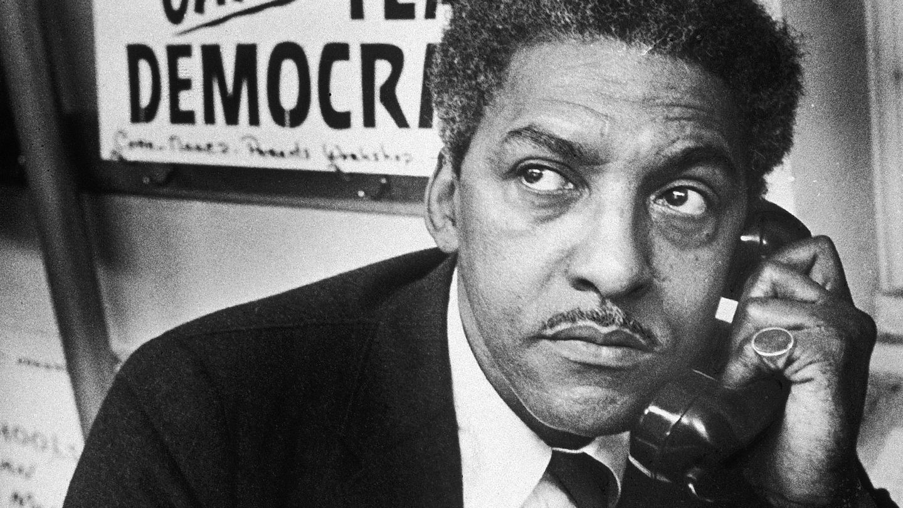

Bayard Rustin
Bayard Rustin nasceu em West Chester, Pensilvânia, em 17 de março de 1912. Ele se mudou para Nova York nos anos 30 e esteve envolvido em grupos pacifistas e primeiros protestos pelos direitos civis. Combinando resistência não violenta com habilidades organizacionais, ele foi um dos principais conselheiros de Martin Luther King Jr. na década de 1960. Embora tenha sido preso várias vezes por sua própria desobediência civil e homossexualidade aberta, ele continuou a lutar pela igualdade.Ele morreu na cidade de Nova York em 24 de agosto de 1987.
Nasceu em 17 de março de 1912, em West Chester, Pensilvânia. Ele foi criado para acreditar que seus pais eram Julia e Janifer Rustin, quando na verdade eram seus avós. Ele descobriu a verdade antes da adolescência, que a mulher que ele pensava ser seu irmão, Florence, era de fato sua mãe, que tinha Rustin com o imigrante das Índias Ocidentais Archie Hopkins.
Rustin estudou na Wilberforce University, em Ohio, e no Cheyney State Teachers College (hoje Universidade Cheney da Pensilvânia), na Pensilvânia, ambas escolas historicamente negras. Em 1937, ele se mudou para Nova York e estudou no City College de Nova York. Ele se envolveu brevemente com a Liga Comunista Jovem na década de 1930, antes de se decepcionar com suas atividades e renunciar.
Em sua filosofia pessoal, Rustin combinou o pacifismo da religião quaker, a resistência não violenta ensinada por Mahatma Gandhi e o socialismo defendido pelo líder trabalhista afro-americano A. Philip Randolph. Durante a Segunda Guerra Mundial, ele trabalhou para Randolph, lutando contra a discriminação racial em contratações relacionadas à guerra. Depois de conhecer AJ Muste, ministro e organizador do trabalho, ele também participou de vários grupos pacifistas, incluindo a Irmandade da Reconciliação. Rustin foi punido várias vezes por suas crenças. Durante a guerra, ele foi preso por dois anos quando se recusou a se registrar para o recrutamento. Quando ele participou de protestos contra o sistema de transporte público segregado em 1947, ele foi preso na Carolina do Norte e sentenciado a trabalhar em uma gangue por várias semanas. Em 1953, ele foi preso por uma acusação moral por se envolver publicamente em atividades homossexuais e foi preso por 60 dias; no entanto, ele continuou a viver como um homem abertamente gay.